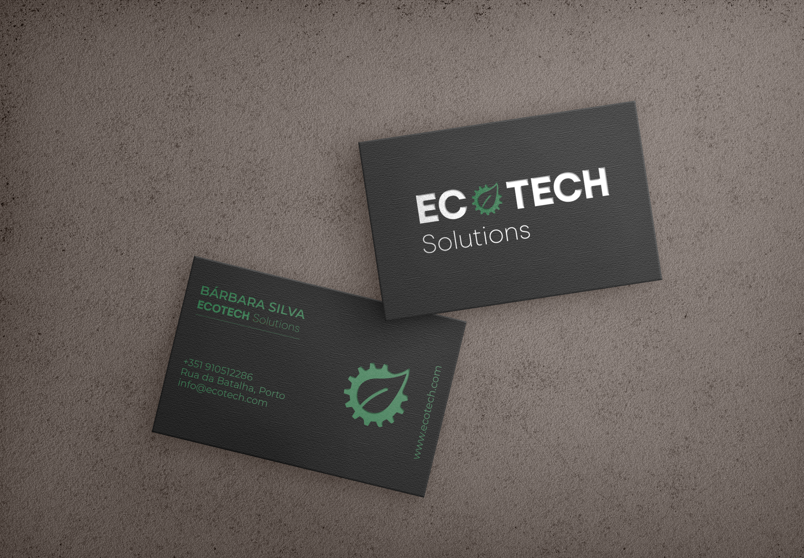
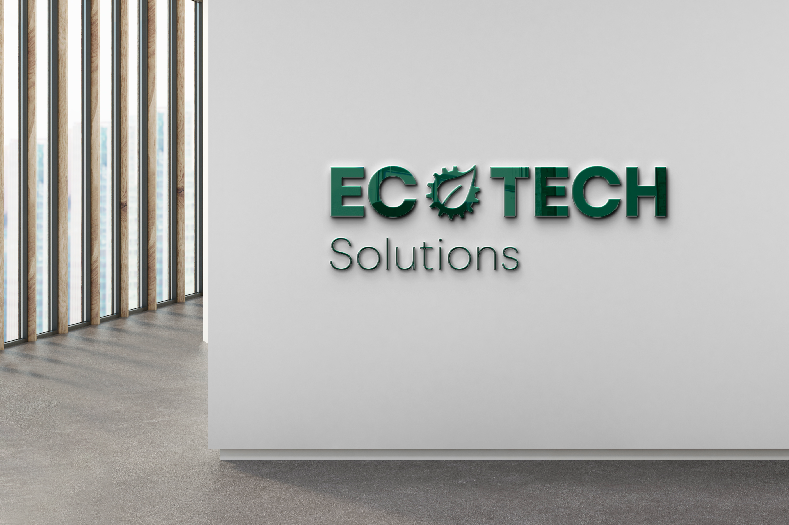
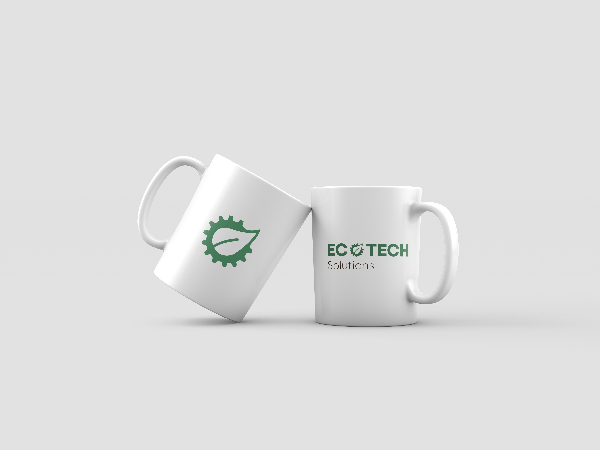

EcoTech
Challenge
My motivation behind creating EcoTech was simple, to train my skills in identity branding while crafting something entirely original. I've always had a passion for branding design, and I wanted to challenge myself to create a company from scratch, without relying on existing models or trends.
Approach
For the approach, I went back to basics. I mean, the name says it all: EcoTech. I played around with the letters, swapping out the "o" for a leaf to give it that natural vibe. It's like saying, "Hey, we're all about tech, but we're not forgetting about the planet." It's all about finding that balance, you know? So, every decision I made, from the logo to the projects we take on, is about finding that sweet spot where technology and nature can work together to make the world a better place.